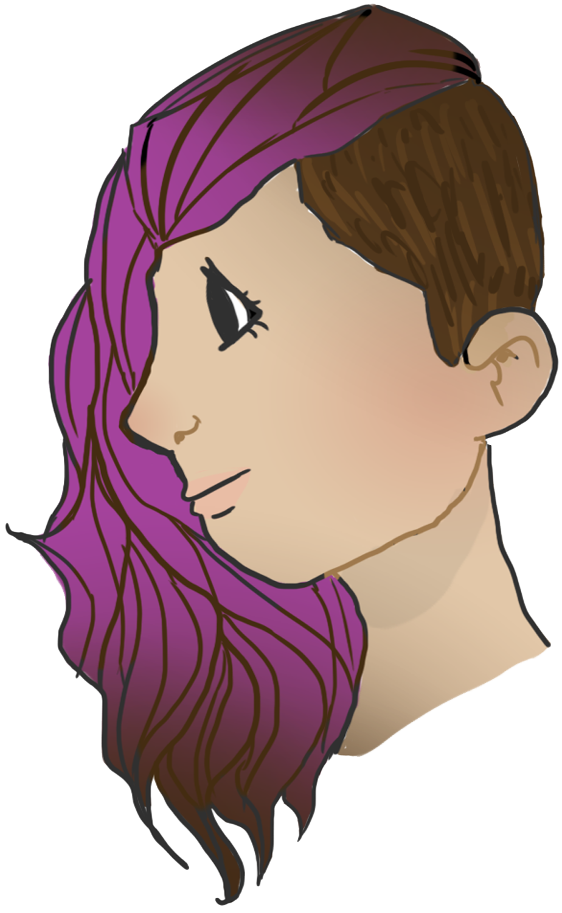
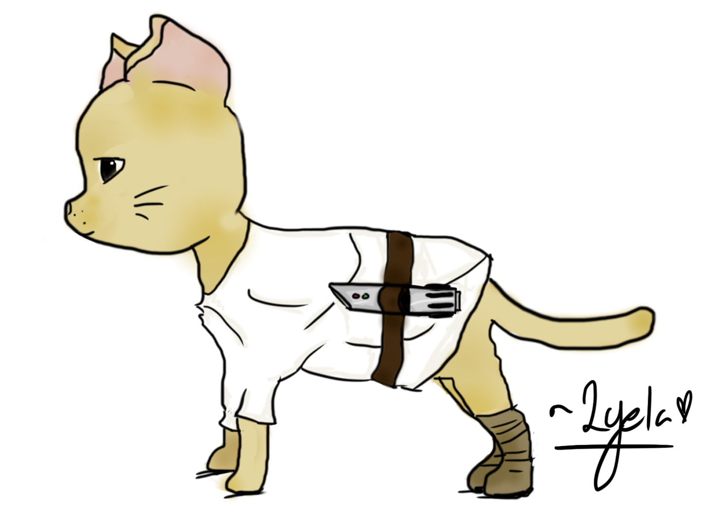

Introduction
I draw a number of different things, but I usually draw portaits or sometimes landscapes. I use all kinds of different mediums for my art such as Copic markers, acrylic paint, watercolors, and digital art. My artwork will be organized by my oldest at
the bottom and my latest at the top.
Hope you like it!
2018
Name: Ben Platt
Medium: Digital
Date: 4/21/18

Name: Girl With Purple Hair
Medium: Copic Markers
Date: 4/20/18

Name: Girl With Short Curly Hair
Medium: Digital
Date: 4/16/18
Name: Girl with a Guitar
Medium: Digital
Date: 4/12/18
Name: Connor Murphy
Medium: Digital
Date: 3/31/18

Name: Evan Hansen
Medium: Digital
Date: 3/28/18
Name: Okoye
Medium: Copic Markers
Date: 3/22/18

Name: Gril with Headphones
Medium: Copic Markers
Date: 3/20/18

Name: Self Portrait 2018
Medium: Digital
Date: 3/17/18

Name: Miguel from the movie Coco
Medium: Copic Markers
Date: 3/12/18

Name: Girl in a Purple Sweater
Medium: Copic Markers
Date: 3/10/18

Name: Luke Catwalker
Medium: Digital
Date: 3/4/18
Name: Spock as a Cat
Medium: Digital
Date: 3/1/18

Name: Grey Cat
Medium: Digital
Date: 2/25/18
Name: Purple Cat
Medium: Digital
Date: 2/25/18

Name: Lee Loo
Medium: Copic Markers
Date: 2/7/18

Name: Noah Schnapp
Medium: Copic Markers
Date: 2/6/18

Name: A Girl with Glasses
Medium: Copic Markers
Date: 2/4/18

Name: A Girl with Pink Hair
Medium: Copic Markers
Date: 1/31/18
Name: Monochrome Girl
Medium: Acrylic Paint with water
Date: 1/29/18

Name: Girl with Geometric Hair
Medium: Copic Markers
Date: 1/27/18

Name: Bubbles
Medium: Colored Pencils
Date: 1/25/18
Name: A Sunset
Medium: Acrylic Paint
Date: 1/21/18

Name: A Girl in a Sweater
Medium: Mixed Media
Date: 1/5/18
Name: A Galaxy
Medium: Acrylic Paint
Date: 1/3/18

Name: Blue and Red Space
Medium: Acrlic Paint
Date: 1/3/18

Name: Trees and a Night Sky
Medium: Acrylic Paint
Date: 1/1/18
2017

Name: Eleven with ling hair
Medium: Copic Markers
Date: 12/26/17

Name: Lucas
Medium: Copic Markers
Date: 12/25/17

Name: Dustin
Medium: Copic Markers
Date: 12/19/17

Name: Mike with Walkie Talkie
Medium: Copic Markers
Date: 12/16/17

Name: Barb
Medium: Copic Markers
Date: 12/10/17

Name: Eleven
Medium: Copic Markers
Date: 12/10/17

Name: Mike
Medium: Copic Markers
Date: 12/10/17
×

© 2018 Serendipity Art, All rights reserved.